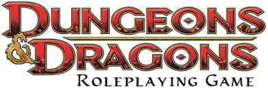
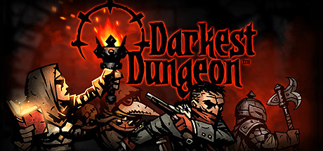

The first role-playing game wasn't actually a video game, but rather a board game under the name of Dungeons and Dragons. It was first published in 1974, and since then has been a staple for many. It requires you to make your own characters and manage inventories etc, whilst the DM (Dungeon Master) creates the story and decides what happens next, rolling dice for different things such as strength and agility to see if you survive or lose.
Darkest Dungeon was released in 2016. It has the player manage a roster of heroes to explore dungeons below a gothic mansion the player has inherited. Played out in a mix of real-time movement and turn-based combat, a core feature of Darkest Dungeon is the stress level of each hero that increases with further exploration and combat; a character sustaining a high stress level may gain afflictions that will hamper, or possibly enhance, their performance as an explorer.
